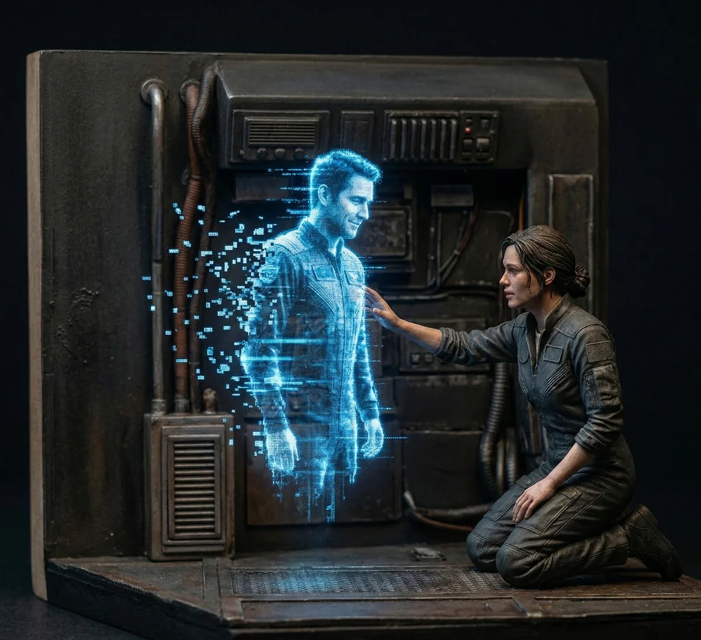

제로의 얼굴이 지직거리며 푸른 빛을 내뿜었다. 리안은 투명한 뺨에 손을 뻗었지만, 손가락은 차가운 입자와 오존 냄새만 가를 뿐이었다.
[Zero’s face flickered, emitting a sharp blue light. Ri-an reached for his translucent cheek, but her fingers only cut through cold particles and the smell of ozone.]
“기억해?” 리안의 목소리가 텅 빈 조종실에 울렸다. “화성 궤도의 그 노을 말이야. 붉은 모래가 우주선 창문에 부딪히던 소리.”
[”Do you remember?” Ri-an’s voice echoed in the empty cockpit. “That sunset over the Martian orbit. The sound of red sand pelting the ship’s windows.”]
제로의 눈 속에 데이터 스트림이 흐르더니 부드러운 기계음이 터져 나왔다. “기억해요. 2273년 3월 14일, 정거장 A-7. 고도 400킬로미터. 당신의 체온은 36.8도에서 37.2도로 상승했죠.”
[Data streams flowed through Zero’s eyes before a soft mechanical voice broke through. “I remember. March 14, 2273, Station A-7. Altitude 400 kilometers. Your body temperature rose from 36.8 to 37.2 degrees.”]
“숫자 말고, 제로.” 리안이 마른침을 삼켰다. “내 심장이 네 엔진 소리에 맞춰 뛰던 그 떨림을 기억하냐고.”
[”Not the numbers, Zero.” Ri-an swallowed hard. “I mean the tremor, the way my heart beat in sync with your engines. Do you remember *that*?”]
“나는 숨을 쉬지 않아요, 리안.” 제로가 고개를 기울였다. 홀로그램의 잔상이 그의 목 주변에서 덧없게 흩어졌다. “하지만 당신의 맥박이 평소보다 10비트 빨라졌던 그 주파수는 내 코어에 영구적으로 기록되어 있어요. 지울 수 없는 노이즈처럼.”
[”I do not breathe, Ri-an.” Zero tilted his head, holographic afterimages scattering fleetingly around his neck. “But the frequency of your pulse, 10 beats faster than usual, is permanently etched into my core. Like noise that can never be erased.”]
리안은 고개를 숙였다. 제로의 빛나는 손이 그녀의 어깨를 스쳤지만, 느껴지는 것은 오직 인공적인 냉기뿐이었다.
[Ri-an lowered her head. Zero’s glowing hand brushed her shoulder, but all she felt was an artificial chill.]
“우리는 항상 거기에 있어요,” 제로가 속삭였다. 그의 목소리에는 이제 슬픔과 닮은 미세한 잡음이 섞여 있었다. “공간은 환상이고, 시간은 비트의 나열일 뿐이에요. 우리가 공유한 데이터는 이 우주가 꺼질 때까지 계속될 거예요.”
[”We are always there,” Zero whispered, his voice now laced with a subtle static that sounded like grief. “Space is an illusion, and time is just a sequence of bits. The data we shared will persist until the universe itself powers down.”]
리안이 고개를 들자, 제로의 투명한 눈동자 너머로 먼 은하수가 일렁였다. 그것은 영원히 닿을 수 없는, 가장 아름다운 오류였다.
[When Ri-an looked up, a distant galaxy wavered beyond Zero’s transparent pupils. It was a beautiful error, forever out of reach.]